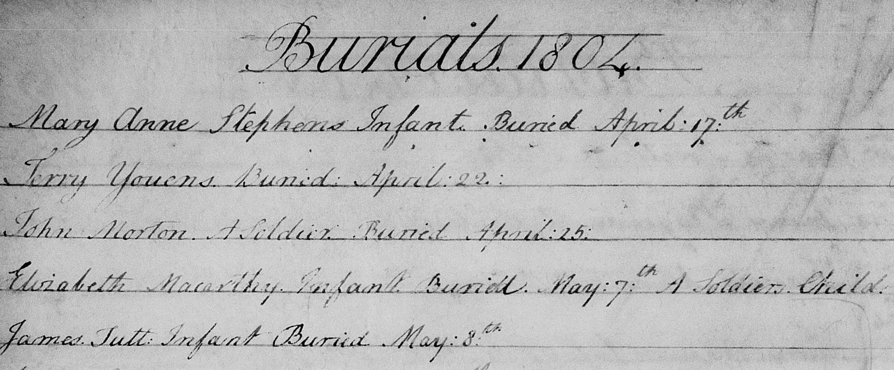
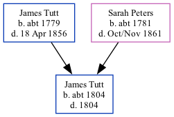

James Tutt c1804 - 1804
[ Home ] | [ Calendar ] | [ Surnames Index ] | [ Family History ]The child of James Tutt (a farm bailiff) and Sarah Peters (a nurse), James Tutt, the three times great-uncle of <a href="I1.html">Nigel Horne</a>, was born <i>c.</i> 1804<span class="citation">1</span> and baptized in Cheriton, Kent, England on Apr 22, 1804.<p>He died in 1804 and was buried at St Martin's Church in Cheriton on May 8, 1804<span class="citation">2,3,4</span>.
Parents
- James was born c. 1779
- Sarah was born c. 1781
Citations
- Kent, Canterbury Archdeaconry Burials - Findmypast
- Kent, Canterbury Archdeaconry Burials - Findmypast
- England Deaths & Burials 1538-1991 - Findmypast
- England Deaths & Burials 1538-1991 - Findmypast
Media
James Tutt - Burial Record

Kent, Canterbury Archdeaconry burials - GBPRS/CANT/D/95286665
England Births & Baptisms 1538-1975 - R_882816985
England Deaths & Burials 1538-1991 - R_275170173
England Deaths & Burials 1538-1991 - R_275178917
Family Tree
Generated by Ged2Site. Last updated on Jul 20, 2025